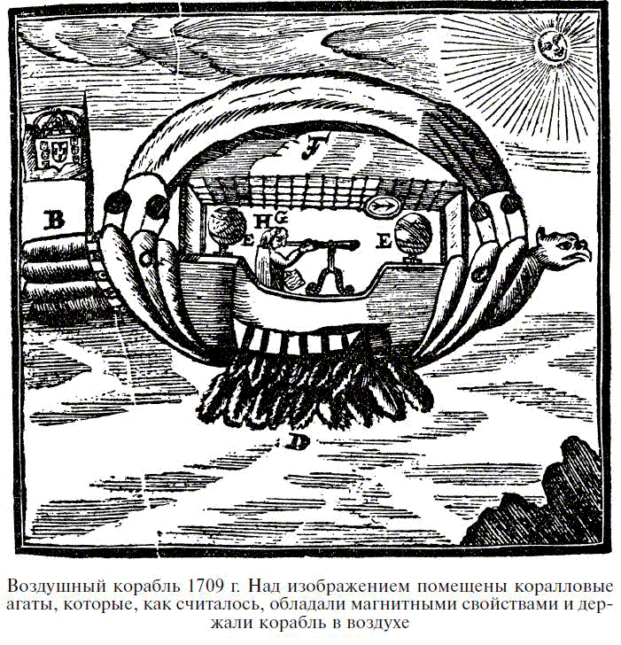
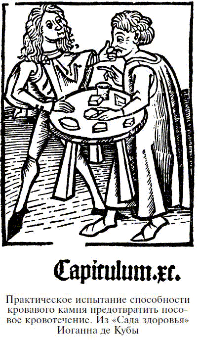
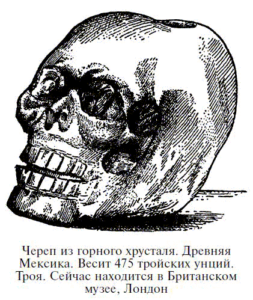
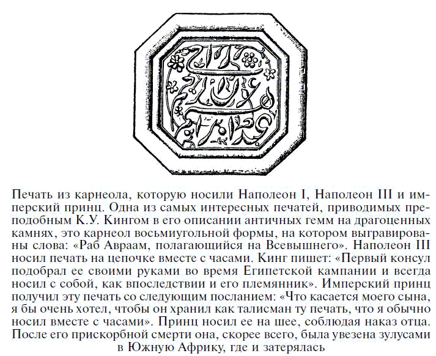
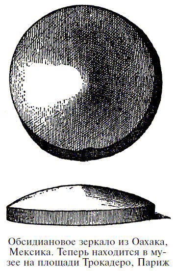
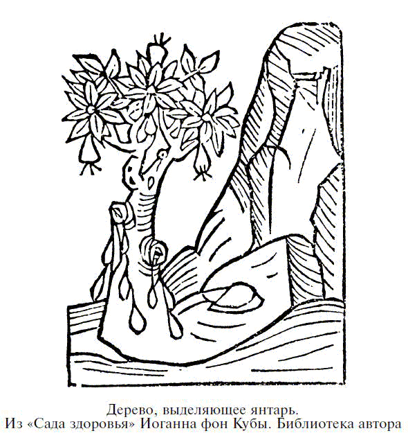

Талисманы из специальных камней
 АГАТ
АГАТ
Автор поэмы «Литика» отмечает достоинства агата в следующих строках:
Украшенный им, ты завоюешь сердце женщины
И убеждением желаемого добьешься;
И если у людей что-либо просишь ты, домой вернешься,
Празднуя исполнение всех своих желаний.
Эту идею высказал Марбодий, епископ Реннский, в XI веке. Он писал, что агаты делают своих носителей красноречивыми и приятными в общении, а также шлют им милость Божью. Другие свойства перечисляются Камилло Леонарди, заявляющим, что эти камни несут победу и силу своим владельцам, а также отводят гром и молнию.
Агат, обладая прекрасными качествами, оберегающими носителя камня от всех напастей, был наделен большим сердцем и способностью преодолевать все земные препятствия; в этой последней прерогативе содержался, вероятно, и секрет его популярности. Одни из таких чудотворных агатов были черными, с белыми прожилками, другие – полностью белыми.

Украшения из агата даже считались лекарством от бессонницы, навевавшим приятные сны. Несмотря на эти предполагаемые достоинства, Кардани[26] был убежден, что ношение этого камня приводит ко многим неприятностям, которые он никак не мог объяснить своей виной или ошибкой. Тогда он прекратил пользоваться агатом, хотя и утверждал, что этот камень заставлял владельца действовать более благоразумно. Как выяснилось, Кардани проверял талисманные свойства различных камней, пользуясь ими по очереди и отмечая степень своей удачи или неудачи. Следуя этому методу, он, по-видимому, пришел к положительным результатам, но ему не удалось осознать того, что на самом деле никакой реальной связи между камнями и их предполагаемыми воздействиями не существует. В другом трактате автор более благосклонен к агату, заявляя, что те, кто носит его, становятся умеренными, сдержанными и предусмотрительными; поэтому агат весьма полезен тем, кто решил разбогатеть.
В соответствии с текстом, сопровождающим любопытное издание, опубликованное в Вене в 1709 году, привлекательные свойства так называемого кораллового агата предлагалось использовать в дирижабле – изобретении одного бразильского священника. Над головой авиатора располагалась железная сетка, к которой прикреплялись большие коралловые агаты. Предполагалось, что они смогут поднять дирижабль в воздух, когда под воздействием тепла солнечных лучей камни обретут магнитную силу.
Основная подъемная сила осуществлялась бы огромными магнитами, размещенными в двух металлических сферах; не объяснялось лишь, как должны работать сами магниты.
В середине прошлого века спрос на агатовые амулеты в Судане был так велик, что огромные предприятия по распилке и обработке агата в Идаре и Оберштайне, Германия, были почти целиком заняты выполнением заказов для этой торговли. В основном для производства амулетов использовались коричневые или черные агаты с белым кольцом – символом глаза – в центре. Считалось, что эти амулеты нейтрализуют власть дурного глаза или являются эмблемой всевидящего ока духа-хранителя. Спрос на эти амулеты затем значительно упал, но в момент наивысшего подъема отдельные фирмы экспортировали их ежегодно на сумму до 40 000 талеров (30 000 долларов), и даже в наше время объем торговли этими предметами остается значительным. Существование моды на амулеты подтверждается и тем, что, пока на западном берегу Африки носили красные, белые и зеленые амулеты, в Северной Африке спросом пользовались только белые камни.
АЛЕКСАНДРИТОдним из камней-талисманов, которые приобрели свою славу уже в наши дни, является александрит, разновидность хризоберилла, найденная в России, в районе Урала. Открытие этой разновидности было приурочено в 1831 году к тринадцатилетию Александра II (впоследствии престолонаследника), в честь которого минералог Норденскельд и назвал этот камень. Сам камень редко весит более 1–3 карат и обладает ярко выраженным плеохроизмом,[27] меняя свою окраску от изумрудно-зеленого до великолепного красного. На Цейлоне находили камни и гораздо большего размера, некоторые – весом более 60 карат каждый; цвета – ближе к бутылочно-зеленому, которые ночью становятся еще темнее, чем русские камни. Такие камни исключительно редки. Так как красный и зеленый являются национальными русскими цветами, александрит стал любимцем россиян и считался в этой стране камнем доброго знамения. Красота этого камня, однако, столь велика, что его слава отнюдь не ограничивается Россией, и он так же высоко ценится в других странах.
АЛМАЗАлмаз для жемчужины как солнце для луны – и мы вполне можем назвать один из них «камнем-королем», а другую «камнем-королевой». Алмаз, как рыцарь, яркий и стойкий, – эмблема бесстрашия и неуязвимости; жемчужина, как дама старых времен, чистая и прекрасная, – эмблема скромности и чистоты. Таким образом, кажется вполне понятным, что жемчужины должны сочетаться с алмазами. Достоинства, приписываемые этому камню, почти все основываются или на его непреодолимой прочности, или на прозрачности и чистоте. Считалось, что он приносит победу своему владельцу, наделяя носителя высшей силой, мужеством и отвагой. Марбодий пишет, что этот магический камень великой силы служил для отвода ночных призраков. С этой целью его оправляли в золото и носили на левой руке. По словам святой Хильдегарды,[28] величайшее достоинство алмаза признано даже дьяволом, большим врагом этого камня, так как последний оказывал сопротивление его власти днем и ночью. Руэ в своей книге «О драгоценных камнях», вышедшей в 1566 году, называет алмаз «камнем примирения», так как он усиливает любовь мужа к жене. Кардани придерживается более пессимистического мнения о качествах алмаза:
«Считается, что он лишает носителя счастья; его влияние на разум подобно влиянию солнца на глаза, оно больше туманит, чем укрепляет взор. Да, он дает бесстрашие, но ничто не содействует нашей безопасности более, чем осторожность и страх, так что лучше бояться».
Алмаз зачастую ассоциировался с молнией и считался иногда обязанным своим происхождением грому и молнии. Но мы не припоминаем, что встречали где-либо еще утверждение, похожее на приведенное в анонимном итальянском манускрипте XIV века, о том, что при громе и молнии алмаз способен расплавляться или разрушаться. Конечно, вполне логично, что сила, способная создать камень, способна его и разрушить. Тот факт, что алмаз при высокой температуре может полностью расплавиться, в XIV веке Европе был неизвестен, поэтому, скорее всего, вера в разрушительную силу электричества возникла из поэтических фантазий или предрассудков, а совсем не из концепции истинной природы алмаза.
В Талмуде мы читаем о камне, предположительно алмазе, который носил один из высших священнослужителей и который описал святой Епифаний. Этот камень служил для определения вины или невиновности обвиняемого в преступлении; если тот был виновен, камень мутнел, если же нет – он сверкал ярче прежнего. Об этом свойстве писал и Джон Мандевилль:[29]
«Часто случается, что алмаз теряет свои свойства, когда тот, кто носит его, грешен или невоздержан».
Индусы классифицируют алмазы в соответствии с четырьмя кастами. Алмаз брамин дает власть, друзей, богатство и удачу; кшатрий – отдаляет приближение старости; алмаз вайшья приносит успех; а шудра – всевозможное счастье. С другой стороны, в трактате «Буддхабхатта» о драгоценных камнях написано:
«Алмаз, часть которого цвета крови или запятнанный кровью, вскоре принесет смерть своему владельцу, будь он хоть палачом».
Арабы и персы, так же как и современные египтяне, соглашаются с приписываемой алмазу силой приносить счастье; Рабби Бенони, мистик XIV века, рассказывая о магических свойствах камня, утверждает, что он рождает сомнамбулизм и как талисман так сильно притягивает влияние планет, что делает носителя неуязвимым; говорится также, что алмаз может вызвать спиритический экстаз. Алхимик того же столетия Пьер де Бонифас полагал, что алмаз делает носителя невидимым.
Интересная выдумка, широко распространенная в отношении многих камней, наделяет алмаз полом. Поэтому неудивительно, что эти камни считались наделенными репродуктивной силой. В этой связи сэр Джон Мандевилль писал:
«Они растут вместе, мужской и женский камень, и питаются росой небес; они порождают сообща маленьких деток, которые размножаются и растут весь год. Я часто проводил эксперимент: клал рядом с алмазом немного другой горной породы и часто смачивал их майской росой. С каждым годом камни росли, и маленький становился большим».
Следующие строки – из перевода знаменитой орфической поэмы, написанной во II веке н. э. Они свидетельствуют о том, как высоко ценился алмаз в те времена:
Не сможет причинить вреда сглаз тому,
Кто будет носить алмаз как украшение.
Ни один монарх не попытается перечить его воле,
И даже боги будут выполнять его желания.
Возможно, это относится к бесцветному корунду, так называемому белому сапфиру, или кварцу, так как древним вряд ли был известен алмаз.
Древнеиндийский трактат «Буддхабхатта» о драгоценных камнях утверждает, что алмаз брамин должен иметь белизну горного хрусталя; кшатрий – коричневый оттенок заячьего глаза; вайшья – очаровательный цвет лепестков цветка кадали, а шудра – блеск отполированного лезвия. К исключительно королевским камням мудрецы относили только два вида цветных алмазов: один – красный, как коралл, и другой – желтый, как шафран, хотя в королевских украшениях могли использоваться алмазы и других оттенков.
Типичный алмаз описывается в трактате о драгоценных камнях:
«Шестиконечный алмаз чистый, без пятен, с острыми краями, великолепной формы, светлый, с идеальными гранями, без дефектов, освещающий пространство своим огнем и отражающий радугу – такой алмаз нелегко найти на земле».
По распространенному поверью, приведенному в «Книге о природе» Конрада фон Мегенберга, талисманная сила алмаза утрачивалась при покупке камня – его свойства сохранялись, лишь когда камень получали в подарок. То же относилось и к бирюзе. Полагалось, что дух, обитающий в камне, оскорбляла идея его купли или продажи и он покидал камень, не оставляя после себя ничего, кроме безжизненной материи, но если алмаз или бирюза являлись даром любви или дружбы, дух с удовольствием переносил свои свойства от одного владельца к другому.
В новом издании вавилонского Талмуда говорится о еврейском раввине, который время от времени пытался оживить свои проповеди по ритуальным и юридическим вопросам, рассказывая «интересные истории». Одну из них можно привести в качестве примера дикой неправдоподобности этих рассказов и веры в исключительные магические свойства алмаза:
«Р. Иегуда из Месопотамии обычно рассказывал: однажды, находясь на борту корабля, я увидел алмаз, вокруг которого обвилась змея, и отправил за ним ныряльщика. Змея открыла рот, угрожая проглотить корабль. Неожиданно прилетел ворон, клюнул гадину – и вся вода вокруг обернулась кровью. Другая змея, ухватив алмаз, положила его на останки первой, и та ожила и снова стала угрожающе открывать рот. Прилетела вторая птица, клюнула змею снова в голову, схватила алмаз и уронила его на корабль. У нас в провианте были засоленные птицы, и мы решили проверить, сможет ли камень оживить их. Мы положили на птиц алмаз, и они, взмахнув крыльями, улетели вместе с камнем».
Говорят, что первые алмазы, увиденные европейцами в Южной Африке, были найдены в кожаном мешке шамана. Хотя в Африке большие камни или куски породы обычно служили предметом поклонения – фетишем, к ним можно отнести и маленькие камешки, завернутые в цветные лоскутки и носимые на шее. В некоторых компетентных источниках утверждается, что эти алмазы были игрушками детей буров. Аль-Казвини рассказывает следующую чудесную сказку о Долине алмазов:
«Аристотель[30] говорит, что никто, кроме Александра, никогда не достигал места, откуда берутся алмазы. Это долина в земле Хинд. В ее глубины не может проникнуть взор человека; там водятся невиданные змеи, при взгляде на которых человек умирает. Однако они сильны, только пока живы, а после смерти теряют свою власть. Полгода там стоит лето, а полгода – зима. И приказал Александр принести железное зеркало к тому месту, откуда появляются змеи. Приблизившись к зеркалу, змеи падали замертво, увидев свое отражение в нем. Александр пожелал достать алмазы из долины, но никто не осмеливался спуститься туда. Тогда он собрал мудрейших, и они посоветовали ему бросить в долину куски сырого мяса. Полководец так и поступил, и камни прилипли к мясу. На него слетелись птицы и вынесли куски в своих когтях из долины. Затем Александр приказал своим людям следовать за этими птицами и собирать то, что упадет с мяса.
Другой писатель утверждает, что рудники со смертоносными змеями были в глубоком ущелье в горах Цейлона. Когда люди хотели достать алмазы, они бросали в ущелье куски мяса, которые хватали грифы и выносили на край ущелья. Там прилипшие алмазы и оставались. Некоторые из них были размером с чечевицу или горошину. Самые большие экземпляры достигали величины половинки боба».
В версии сказки Тейфаши,[31] в седьмом путешествии Синдбада-морехода, говорится, что самые красивые корунды были намыты ручьями, стекающими с пика Адама на острове Цейлон. Однако во время засухи этот источник иссяк. Но на вершине горы было много орлиных гнезд, и искатели драгоценных камней стали разбрасывать куски сырого мяса у подножия горы. Орлы хватали пищу и несли в свои гнезда, но были вынуждены время от времени садиться, чтобы отдохнуть. Куски мяса лежали на скале, и некоторые корунды прилипали к ним. Когда птица, схватив мясо, снова взлетала, камешки отваливались и скатывались с горы вниз.
Истоки этих часто повторяющихся сказок, по объяснениям доктора Валентина Болла, лежат в индусском обычае жертвоприношения скота при открытии новых рудников, когда на месте оставляют куски мяса для духов-хранителей. Так как это мясо вскоре уносится птицами, возникла легенда о таком способе добычи алмазов. Как пишет доктор Болл, эти обычаи до сих пор живы в некоторых районах Индии.
Влияние, оказываемое индусскими суевериями на самых просвещенных европейцев наших дней, может подтвердить тот факт, что одаренная примадонна, мадам Метерлинк, жена выдающегося европейского поэта, призналась, что носит бриллиант на лбу, так как ее муж считает, что он приносит удачу владельцу. Это украшение на лбу очень характерно для индусов и пользуется в Индии особой популярностью.
АМЕТИСТВ XV веке кроме особого и традиционного свойства аметиста излечивать пьянство этому камню приписывалось и много других достоинств. По Леонарди,[32] он обладал властью изгонять злые мысли, развивать ум, наделять человека проницательностью в делах. Аметист, носимый персоной, отрезвлял ее, и это касалось не только любителей часто пропустить стаканчик, но и сгорающих от страстной любви. Наконец, аметист оберегал солдат от ранений, способствовал победе над врагом и очень помогал охотникам на диких зверей. Как и многие другие камни, он обладал властью защищать носителя от заразы, о чем повествует средневековый трактат «Сад здоровья», написанный Иоганном де Кубой и изданный в Страсбурге в 1483 году.[33]
Во французской поэзии существует красивая легенда об аметисте. Бог Вакх, обиженный пренебрежением к своим страданиям, решил отомстить за себя и заявил, что первый человек, которого он встретит, будет брошен на растерзание тиграм.
Парки[34] решили сделать этой жертвой красивую и чистую девушку по имени Аметис, которая готовила себя к служению в храме Дианы. Когда свирепые звери бросились на девушку, она стала молить богов. Те спасли ее от растерзания, превратив в чистый, белый камень. Узнав о чуде и раскаявшись в своей жестокости, Вакх пролил виноградный сок на окаменевшее тело девушки, что придало камню прекрасный фиолетовый оттенок, чарующий и поныне взгляд своего владельца.
Из различных описаний этого камня древними авторами следует, что он является одной из разновидностей розового альмандина, или индийского граната, и вполне правдоподобно, что и название аметиста происходит от его предполагаемой способности оберегать от пьянства. Если налить воду в сосуд, изготовленный из красноватого камня, жидкость будет напоминать вино и может быть выпита с удовольствием.
АТЛАСНЫЙ ШПАТ (ГИПС)Разновидность фиброзного гипса – с длинными и продольными прожилками – известна как атласный шпат. Этот материал часто распиливается округло или в виде кабошона, поперек прожилок; иногда ему придают форму бусин или капель и вставляют в серьги, ожерелья и броши-булавки. Находят его в основном в России, Англии или в других странах, а обрабатывают в Англии или России. Некоторые из камней вставляются в латунь, с позолотой или без. Такие камни продаются как «камни удачи» на Ниагаре. Утверждается, что атласный шпат с большим риском добывается из-под самого водопада, так как случайно в этих местах находили небольшие залежи этого вида гипса.
Время от времени небольшие партии этого материала отправляли в Японию, так как японцы ценят его чистоту и свойства, подобные свойствам тигрового глаза. Он достаточно дешев и в то же время очень мягок. Его можно поцарапать ногтем. Камень из России, золотисто-желтого или оранжево-розового цвета, используется в различных орнаментах и имеет распространенную форму яйца. Предметы из него зачастую дарят на Пасху. Этот же материал известен и в Египте, и ему придается та же форма яйца в украшениях – так называемые «яйца фараона», правда, какого же именно фараона, не указано. Их считают приносящими удачу и защищающими от зла.
БЕРИЛЛАрнольд Саксонский, XIII век, после перечисления всех достоинств берилла Марбодием, Эваксом и Исидором добавляет, что этот камень помогает в борьбе против врагов и в ссоре; носитель его становится непобедимым и в то же время дружелюбным, приобретает живость ума и исцеляется от лени. В древнем немецком переводе трактата «Свойства редкостей» Томаса де Кантимпре говорится о том, что берилл вновь пробуждает супружескую любовь.
БИРЮЗАХотя и существует тенденция приписывать определенные качества, свойственные одному камню, другим, похожим на него по цвету или виду, некоторые камни считаются обладающими уникальными качествами, характерными только для них. Пример тому – бирюза. С давних времен этот камень был известен в Египте, затем описывается Плинием под названием callais. Для Плиния и для тех, кто позднее черпал свою информацию из его источников, бирюза оставалась камнем с общими свойствами голубых и зелено-голубых камней. Но с XIII века, когда впервые стало употребляться название «бирюза», мы читаем, что камень обладает силой защищать носителя от травм при падении, в основном с лошади; затем и от падения со зданий или даже в пропасть. В авторитетном источнике XIV века сэра Джона Мандевилля «Лапидарии» говорится, что бирюза защищает лошадей от болезненных последствий, когда при перегреве они пьют холодную воду. Поэтому турки часто прикрепляют эти камни как амулеты к уздечкам или на лоб лошадям. В том же качестве их используют в Самарканде и Персии. Мы с уверенностью можем предположить, что на Востоке бирюза использовалась как «лошадиный амулет», и вера в ее способность защищать от падения основывается на том, что камень укрепляет силы и выносливость лошади. Так как лошадь часто считается символом солнца в его быстром движении по небу, небесный оттенок бирюзы тоже ассоциируется с лошадью. Правдоподобие этого мы можем лишь осмелиться предположить.
Ранние упоминания о способности бирюзы защищать от падения присутствуют и в «Книге о камнях» Вольмара: «Тот, кто владеет бирюзой, оправленной в золото, пока камень находится с ним, не повредит ног при падении, где бы он ни шел, ни ехал».
Ансельм де Боот, придворный врач императора Рудольфа II, рассказывает историю о бирюзе. После 30 лет обладания этим камнем один испанец выставил его на продажу наряду с другой собственностью. Все очень удивлялись, обнаружив, что камень полностью потерял цвет. Несмотря на это, отец де Боота купил его за смешную цену. Вернувшись домой, стыдясь, однако, носить такой камень, он отдал его сыну со словами: «Поскольку достоинства камня проявляются, только когда он подарен, я хочу проверить это с твоей помощью». Не оценив достоинств подарка, сын гравировал его как обычный агат и сделал из него печать. Через месяц, однако, цвет камня восстановился, и с каждым днем он становился лучше и лучше. Поверив в этот рассказ, мы можем иметь уникальный пример возможности восстановления бирюзой утерянного голубого оттенка.
Спустя некоторое время качества бирюзы де Боота были подвергнуты проверке. Когда он возвращался в Богемию из Падуи, где только что получил ученую степень, то был вынужден проезжать ночью узкой и опасной дорогой. Внезапно его лошадь споткнулась, и он тяжело упал на землю. Странно, но ни лошадь, ни наездник не получили и царапины. На следующее утро, умываясь, де Боот заметил, что четвертушка камня отломилась. Однако камень не потерял своих свойств. Еще через какое-то время он, поднимая очень тяжелую жердь, почувствовал острую боль; решив, что сломал ребра, он очень испугался. Вскоре выяснилось, что кости не пострадали – это было лишь сильное растяжение. Однако, взглянув на бирюзу, он заметил, что камень раскололся надвое.
К особым свойствам бирюзы относили способность ее отбивать точное время, если подвесить камень на нитке и держать двумя пальцами рядом со стеклом. Де Боот утверждает, что он с успехом проделывал этот эксперимент, но склонен относить это скорее к подсознательному влиянию человека – ожидание того, что камень будет отбивать определенное количество ударов, оказывает непроизвольное влияние на движение руки.
В начале XVII века бирюза носилась исключительно мужчинами. Так, де Боот в 1609 году пишет, что считалось почти неприличным, если на руке у мужчины не было перстня с красивой бирюзой. Женщины, однако, редко носили этот камень. Этот обычай был особенно моден среди путешествовавших в то время на Восток англичан.
Персы высоко ценили красоту и силу бирюзы – их национального камня. У них есть поверье: чтобы избежать зла и обрести добрую судьбу, человек должен увидеть отражение новой луны на лице друга, на Коране или на бирюзе, поставив, таким образом, камень в один ряд с наиболее ценными понятиями. Возможно, следует понимать это поверье так, что, имея хорошего друга, святую книгу или бирюзу, можно получить защиту от всего плохого.
В рудниках Лос-Серильос, Нью-Мексико, бирюзу добывают следующим образом: разводят большие костры на породе, камень разогревается, затем его окатывают холодной водой, и при резкой смене температуры камень раскалывается. Некоторые фрагменты из этого региона обработаны в виде различных амулетов, называемых здесь малакатес. Религиозное обожание, с которым относятся к бирюзе многие из индейцев Нью-Мексико, было отмечено майором Хайдом, исследовавшим этот регион в 1880 году. Так, некоторые индейцы из Санто-Доминго, Нью-Мексико, выражали явное недовольство добычей бирюзы из старых шахт, так как считали ее священным камнем, которым не достоин обладать никто, кроме тех, чьим богом является Монтесума.
Руины, называемые Лос-Муэртос, в девяти милях от города Темпе, Аризона, сохранили особенно интересный амулет работы Зуни. Это морская раковина, покрытая черным дегтем, в который мозаично инкрустированы бирюза и гранаты в форме жабы, священной эмблемы Зуни.
Священное значение, которым наделяли этот камень, отражается в богатстве бирюзовых украшений, найденных в захоронениях Пуэбло-Бонито, обнаруженных Джорджем Пеппером в 1896 году в развалинах Чако-каньона в северной части Нью-Мексико. В одном из склепов было найдено около девяти тысяч бусин и подвесок из бирюзы. Это свидетельствует о том, что умерший принадлежал к знатному роду; по состоянию черепа можно утверждать, что он умер насильственной смертью. 1980 бусин на груди скелета, возможно, были ожерельем, расположение других бусин говорит о том, что это были браслеты, нити которых истлели от времени. Наиболее интересны из всех украшений серьги различных форм. В этой же могиле были найдены подвески в форме кролика, птицы, насекомого, человеческой ступни и ботинка. В других могилах было найдено почти шесть тысяч подвесок и бусин из бирюзы. Всего в этих захоронениях оказалось 24 932 бусины.
Другой очень интересный предмет из Пуэбло-Бонито, имевший, вероятно, специальное церемониальное назначение и ценность, – корзинка из бирюзы – цилиндрическая корзина трех дюймов в диаметре и шести дюймов в длину, изготовленная из тонких лубков, покрытых каучуком, со вставленными 1214 маленькими кусочками бирюзы. Они расположены очень близко друг к другу и выглядят как мозаика, полностью покрывающая корзину. Легенды индейцев навахо содержат упоминания о «драгоценных бирюзовых корзинах», и господин Пеппер поднимает вопрос о том, нет ли здесь связи с корзиной индейцев Пуэбло.
Апачи называют бирюзу duklij, что означает «голубой или зеленый камень», не делая различий между этими цветами. Этот камень высоко ценится за его талисманные свойства. Не имея в своем арсенале бирюзы, лекари не получали должного признания. Приписывание бирюзе свойств «грозового камня» возникает из поверья, что тот, кто дойдет до края радуги после грозы, в мокрой земле найдет бирюзу. Одно из предполагаемых свойств – помощь охотнику или стрелку в поражении цели, для чего бирюзу прикрепляли к ружью или луку, тогда оружие точно поражало мишень.
Одной весьма известной в Лондоне даме приписывали способность восстанавливать утерянный оттенок бирюзы. По свидетельствам, ее часто вызывали друзья, дабы вернуть цвет поблекшему камню. Хотя восстановление цвета во многих случаях было скорее воображаемым, чем реальным, нет сомнений, что камень достаточно чувствителен к различным выделениям и может реагировать на состояние здоровья владельца. Автор полагает, что бирюза никогда не может восстановиться до первоначального состояния.
ГАГАТИзделия из гагата находят в пещерах эпохи палеолита в Кесслерлохе, близ Таунгена (кантон Шаффхаузен, Швейцария). Материал (очевидно, из залежей в Вюртемберге) обработан кремневыми осколками. Как и янтарь, гагат относится к камням с талисманными свойствами. Считается, что украшения из него становятся частью души и тела носителя, защищая от зависти, сглаза и порчи. В Бельгии изделия из гагата также обнаружены в пещерах эпохи палеолита (происходящие, возможно, из Северной Лотарингии). Фрагменты были скруглены и просверлены, что может свидетельствовать об их использовании в качестве бус или подвесок. Ожерелья, браслеты и кольца из гагата были особенно популярны в качестве талисманов, поскольку их легко надеть так, чтобы они соприкасались с кожей.
Гагат – один из материалов, используемых индейцами из Пуэбло для амулетов. Исключительно тонко изготовленная из гагата фигурка лягушки найдена в Пуэбло-Бонито в 1896 году господином Пеппером. Образ намного реалистичнее, чем другие фигурки такого типа, найденные в этом районе: глазки лягушки сделаны из бирюзы, а на шее висит бирюзовое ожерелье.
ГЕЛИОТРОПСчитается, что гелиотроп, или кровавый камень, брошенный в воду, придает ей розовый оттенок, такой, что лучи солнца, падающие на воду, имеют сильный красный отблеск. Эта выдумка была преувеличена до такой степени, что данный камень наделялся способностью превращать само солнце в кроваво-красное, вызывать гром и молнию, дождь и бурю.

Старинный трактат Дамигерона все это приписывает гелиотропу, добавляя, что он предсказывает погоду, вызывая дождь и «слышимые пророчества». Возможно, колдуны перед тем, как использовать камень в своих заклинаниях, наблюдали за небесами до тех пор, пока не появлялись признаки грозы. Затем они различными способами истолковывали звуки ветра и грома, чтобы дать подходящие ответы на вопросы о предстоящей погоде. Вполне понятно, что завывание ветра и другие шумы великой симфонии природы представлялись пророками и магами как членораздельная речь. Дамигерон заявляет также, что гелиотроп защищает умственные способности и физическое здоровье владельца, приносит ему уважение и почет, оберегает от обмана.
В лейденском папирусе гелиотроп расписывается как амулет исключительно экстравагантных качеств:
ГЕМАТИТ (КРАСНЫЙ ЖЕЛЕЗНЯК, КРОВАВИК)«Мир не имеет более великой вещи; если кто-то имеет ее, он получит все, о чем просит; она смягчает ярость царей и деспотов; и всему, что бы ни сказал ее обладатель, будут верить. Кто бы ни носил этот драгоценный камень, при произношении выгравированного на нем имени найдет все двери открытыми, все узы будут разорваны и каменные стены рухнут».
Свойства гематита описываются в древнем трактате о драгоценных камнях, написанном Азхалием Вавилонским для великого Митридата, царя Понтийского (умершего в 63 г. до н. э.). Правитель страстно любил драгоценные камни и владел огромной коллекцией оных, как резных, так и обычных. Азхалий, как цитирует Плиний в своей «Естественной истории», учил, что человеческие судьбы подвержены влияниям драгоценных камней, и утверждал, что гематит как талисман обеспечивает его владельцу благосклонность царей и удачное решение судебных дел. Это красный оксид железа с появляющимися при шлифовке красными прожилками. Его называют гематит, от греческого haima – «кровь». Как железная руда он ассоциируется с Марсом, богом войны, и считается бесценной помощью сражающимся на поле брани, если натереть им тело. Возможно, как и магнетит, он считается обеспечивающим неуязвимость.
Высокое искусство индийских мастеров прекрасно демонстрируется в инкрустированном цилиндре из гематита, найденном в Пуэбло-Бонито на юго-западе США. Мозаика из бирюзы представляет цилиндр как условный образ птицы. Крылья отмечены бирюзовой инкрустацией, повторяющей изгиб цилиндра. К одному из его концов присоединяется голова из конического куска бирюзы. На этом конусе выгравирован рельеф маленькой птички. Эта высокохудожественная работа выполнена при помощи самых примитивных инструментов. Легко представить, что этот предмет, возможно амулет, очень высоко ценился и, скорее всего, был собственностью кого-то из вождей племени или сообщества.
ГИАЦИНТГиацинт рекомендовался в основном в качестве амулета для путешественников, благодаря своей репутации защитника от чумы, ран и травм – трех опасностей, которых больше всего боялись те, кто отправлялся в долгий путь. Более того, этот камень обеспечивал своему носителю радушный прием в любом месте, где он оказывался. Говорят, что гиацинт теряет свой блеск и бледнеет, если владелец или кто-либо из его ближайшего окружения заболевает чумой. В дополнение к этим свойствам, гиацинт увеличивает богатство владельца и наделяет его рассудительностью при ведении дел. Об этих свойствах пишут и Марбодий, и Кардани.
Святая Хильдегарда, настоятельница монастыря в Бингеме (умершая в 1179 г.), дает следующие подробности правильного использования гиацинта: «Если кто-то заколдован призраками или магическими заклинаниями так, что потерял разум, он должен взять горячий ломоть чистого пшеничного хлеба и надрезать верхнюю корку в виде креста, не прорезая, однако, ее насквозь, – и затем провести камнем вдоль надреза, повторяя слова: „Господи, ты отбрасываешь все драгоценные камни от дьявола… отбрось от N всех призраков и все магические заклинания, освободи от боли этого безумия“.
Затем человек должен съесть этот хлеб. Однако если его желудок слишком слаб, нужно использовать пресный хлеб. Вся остальная твердая пища, что дается больному, должна быть заговорена таким же образом. Говорят также, что от болей в сердце можно избавиться, если начертить крест на груди, повторяя слова, приведенные выше.
Носящий гиацинт считался защищенным от молнии. Более того, даже восковой отпечаток образа, выгравированного на этом камне, мог отвести молнию от того, кто носил его. Это свойство камня было общепризнанным. С уверенностью провозглашалось, что в местах, где многие пострадали от молнии, среди тех, кто носил гиацинт, пострадавших не было ни одного. Таким же образом он охранял носителя от бубонной чумы даже в местах, где все было заражено этой болезнью. Третьим свойством была способность вызывать сон. Кардани говорит об этом следующее: он имел привычку носить достаточно большой гиацинт и заметил, что „камень, похоже, обладает слабо выраженной способностью навевать сон“. Объясняя эту особенность, Кардани добавляет, что причиной тому, возможно, не лучший сорт этого камня, а также золотистый его оттенок вместо ярко-красного.

Популярную версию своего времени о происхождении горного хрусталя приводит святой Иероним,[35] используя слова Плиния, хотя и не ссылаясь на него: камень якобы образовался из воды, которая замерзла в темных горных пещерах, где температура была очень низкой, так что „камень на взгляд казался водой“.
Причиной тому был, вероятно, тот факт, что камень чаще всего находили в горных ущельях или пещерах. Символически горный хрусталь показывал, что каждый прошедший с ним чрез церковные врата имеет незапятнанную репутацию и чистую веру.
Китайский император Ву посвятил себя службе богам и бессмертным духам. Он построил множество зданий для религиозных целей, и все двери этих строений были сделаны из белого горного хрусталя так, что поток света проникал внутрь зданий. Хотя в китайских текстах этот материал называется горным хрусталем, есть основания полагать, что это было стекло, так как оно в то время уже появилось в Китае.
В отношении того же „горного хрусталя“ рассказывают смешную историю. Муан-Фен, один мандарин, который очень боялся сквозняков, однажды был принят при дворе одного из китайских императоров. Двери приемной были из горного хрусталя и плотно закрыты, но из-за прозрачности материала казались открытыми настежь, и император был очень удивлен, заметив, что Муан-Фен дрожит от холода, хотя в комнате было достаточно тепло.
Исключительно тонкий образец работы ацтеков – череп из горного хрусталя. Он весит более 475 тройских унций и насчитывает более 8 дюймов в ширину.
ЖАДЖад – общий термин, применяемый для обозначения двух разных минералов, поделочных камней – жадеита и нефрита. Первый – силикат магнезии, невероятно твердое вещество, имеющее показатель 6,5 по шкале жесткости, тогда как жадеит, силикат алюминия, имеет более выраженную кристаллическую структуру и жесткость 7. Разновидность изумрудно-зеленого цвета китайцы называют „перьями зимородка“, а также императорским жадом.
Оригинальная форма китайского иероглифа „пао“, означающего „драгоценный“, состоит из очертания дома, в котором заключены символы бусин жада, раковины и глиняного кувшина. Это показывает, что в очень ранние времена, когда начали использоваться эти иероглифы, китайцы уже собирали жад и использовали его для личных украшений. Старейшая форма идеографии слова „император“ появляется в виде символа нитки из бусин жада, который даже сейчас используется в Китае как знак высокого положения и авторитета.
В Китае очень популярны амулеты из жада самых различных форм. Один, с изображением двух мужчин, называется „Два брата неземной любви“, и его часто дарят друзьям.
Феникс из жада – любимое украшение молодых девушек, и его им дарят по достижении определенного возраста. Новобрачным дарят фигурку мужчины, сидящего верхом на единороге; это означает, что в скором времени у них появится наследник.
Любовь китайцев к жаду настолько велика, что те, кто может позволить себе роскошь обладать им, всегда носят его с собой, считая, что, пока камень при них, какое-то тайное свойство его субстанции проникает в тело. Считается, что при ударе жад издает особый мелодичный звук, который китайскому поэту напоминает голос возлюбленной; жад называют концентрированной квинтэссенцией любви.
Бабочка, вырезанная из кусочка жада, имеет в Китае особое романтическое значение, потому что китайская легенда гласит, будто юноша, стремясь поймать разноцветную бабочку, попал в сад богатого мандарина. Вместо того чтобы наказать юношу за нарушение границ частной собственности, мандарин выдал за него свою дочь. С тех пор фигурка бабочки символизирует счастливую любовь, а китайские женихи имеют обыкновение дарить своим невестам бабочек из жада.
Китайское украшение из жада, призванное служить амулетом для ребенка, имеет форму, приближающуюся к форме висячего замка. Если его повесить ребенку на шею, он якобы связывает малыша с жизнью и защищает его от опасных детских болезней. Другой предмет из жада иногда используется в Китае на свадебных торжествах. Это чаша в форме петуха, из нее пьют оба, и жених и невеста. Форма этой вещицы вызвана легендой, согласно которой красивый белый петух, увидев, как его молодая хозяйка, часто ласкавшая его, в отчаянии от потери возлюбленного бросилась в колодец, прыгнул за ней и утопился, чтобы не разлучаться со своей хозяйкой.
Среди великолепных китайских резных фигурок из жада в коллекции Вудварда есть любопытное символическое украшение, сделанное из редкого фей-шу-ию, полупрозрачного, яркого, изумрудно-зеленого жадеита, называемого „перьями зимородка“. Это украшение, выполненное в начале XVIII столетия и считающееся произведением Императорской нефритовой фабрики в Пекине, воспроизводит природную форму цитрина, так называемую „руку Будды“ с пальцевидными наростами, наводящими на мысль о происхождении этого странного названия. Китайцы считают его самой счастливой эмблемой, означающей одновременно и долгую жизнь, и достаток. Еще одним добрым предзнаменованием до настоящего времени считается резная фигурка летучей мыши, цепляющейся за листву, окружающую фрукт, так как китайский иероглиф „фу“ означает одновременно и летучую мышь, и счастье. Это лишний раз показывает, насколько мы отличаемся от китайцев: ведь в нашей расе летучая мышь всегда считалась дурным предзнаменованием.
Хорошо известно, что между обычаями и привычками наиболее цивилизованных аборигенов Нового Света и древними египтянами есть множество аналогий. Одним из примеров можно привести обычай класть в рот умершего знатного человека кусочек чалчихуитл (возможно, жада) или другой зеленый камень, называя камень его сердцем. У бедняков для этих же целей использовался более дешевый камень тексаксоктли. В египетской Книге мертвых мы читаем о правилах, предписывающих класть полудрагоценный камень на мумию или в нее как символ сердца умершего. Объяснение, почему для этих целей древние мексиканцы брали именно зеленые камни, госпожа Зелия Нуталль находит в двух значениях слова на языке науатль – xoxouhqui-yollotl, означающего обычно „свободный человек“, а в литературе – „свежесть“ или „чистое сердце“. Таким образом, камень был символом положения умершего и его сердца. Жады часто находили разрезанными на несколько частей, что свидетельствует об их высокой стоимости. По предположениям доктора Эрла Флинта, вождь отрезал кусочек жада, который носил как отличительный знак своего положения, даря его как украшение или амулет умершему родственнику.
Некоторым погребальным жадам, то есть тем амулетам, которые хоронились вместе с мертвыми, давали название han-yu, или ротовой камень, так как его клали в рот умершего, дабы защитить его. Метрополитен-музей в Нью-Йорке хранит коллекцию из 279 образцов жада, найденных в китайских захоронениях в последние пять-шесть лет и подаренных музею господином Самюэлем Ф. Петерсом. Цвет этих камней не очень привлекателен, поскольку в результате воздействия продуктов распада и других химических веществ из могилы в течение тысячи и более лет на них появились бурые пятна.
Использование китайцами жадов так разнообразно и восхищение их свойствами так велико, что они наделяют жады еще и музыкальностью. Из набора продолговатых пластинок из этого камня одинаковой длины и ширины, обычно около 1,8 фута длины и 1,35 фута ширины, числом от 12 до 24, при постукивании по ним извлекают гармоничный перезвон; различие нот зависит от разной толщины отдельных пластинок. „Каменный перезвон“, использовавшийся при дворе и в религиозных церемониях, состоял из 16 недекорированных камней, а те, что были известны как певческие, состояли из 12–24 пластинок причудливых резных форм. Это использование жада в качестве музыкального инструмента уходит корнями в глубокое прошлое Китая. Говорят, что Конфуций, очень обеспокоенный бесплодностью своих попыток изменить мораль современников, находил утешение в игре на „музыкальном камне“. Крестьянин, услышавший его мелодию, воскликнул: „Действительно переполнено печалью сердце того, кто так колотит по музыкальному камню!“
Украшения из жада высоко ценились маори из Новой Зеландии и назывались хей-тики (резной нашейный амулет). Украшения этого типа представляли собой грубое, гротескное изображение человеческого лица или органов и в основном считались схематическим образом далеких предков. Голова часто склонялась вправо или влево, а очень большие глаза, иногда сделанные из перламутра, смотрели искоса, под углом 45 градусов. Эти украшения были не только памятниками, но и связующим звеном между великими предками, когда-то носившими их, с потомками, удостоившимися чести владеть этой семейной реликвией. Если род вымирал, последний представитель обычно завещал похоронить с собой бесценную реликвию, дабы она не попала в чужие руки. Жад, известный у маори как пунами (зеленый камень), был такой редкостью, что для нахождения его обычно прибегали к помощи тохунга – колдуна. Отправляясь на поиски этого камня, искатели брали его с собой, и, когда они доходили до места, где, по его мнению, должен быть камень, он уединялся и впадал в транс. Очнувшись, он рассказывал, что встретил человека, указавшего ему место, где лежит жад, и отводил искателей туда. Обычно там и находили какое-то количество камней. Естественно предположить, что предварительно колдун убеждался сам в наличии жада именно в этом месте. Камень называли именем человека, дух которого указал место, и придавали ему гротескную форму этого человека. Легко понять почтение, с каким относились к такому камню. Он был не только семейной реликвией, но ценился и из-за своего таинственного происхождения. Когда глава семьи умирал, его хей-тики клали вместе с ним в могилу, но через некоторое время камень изымался ближайшим наследником мужского пола. Если такового не было, камень оставался в могиле. Доказательством особых качеств, приписываемых этому камню, служат внутри– и межплеменные распри за право обладать им.
Без сомнения, камень носил имя человека, образ которого он представлял в самых общих чертах, поскольку этот образ в основном определялся естественной формой камня, которая медленно и терпеливо доводилась до совершенства. Вероятно, из-за примитивности инструментов художника существовало убеждение, что природная форма камня отнюдь не случайна и имеет большое значение, поэтому нуждается лишь в уточнении и прояснении. Использование хей-тики маори прекратилось в начале прошлого века. Большое количество этих камней, собранных в Новой Зеландии, изготовлено 100–150 лет назад.
ЗМЕЕВИКНынешние итальянские крестьяне полагают, что камешки зеленого змеевика защищают от укусов ядовитых тварей. Эти камни обычно зеленые, с белыми прожилками, а их название происходит от воображаемого сходства со змеиной кожей. В дополнение к его профилактическим свойствам предполагается, что, если человека укусило такое создание, приложенный к месту укуса камень вытянет яд. Но при этом, так же как при пользовании кораллом, камень не должен быть обработан человеческими руками. Однако вера, что прикосновение к змеевику любого железного инструмента, такого как, например, приспособление для огранки камней, разрушает волшебное действие субстанции, менее тверда, чем в отношении коралла.
ИЗУМРУДВ трудах святого Епифания имеются сведения, что изумруд может предсказывать будущие события, но неизвестно, как это происходило: либо в камне появлялись видения, как в сферах из горного хрусталя или берилла, либо изумруд наделял владельца сверхъестественным ясновидением. Как разоблачитель истины, этот камень был врагом всякого колдовства и заклинаний, поэтому он пользовался большим уважением у магов, считавших, что все их искусство бесполезно, если поблизости находится изумруд.
Марбодий пишет, что к этой сверхъестественной силе камня, делающей его своего рода пророком, можно добавить множество других свойств. Если кто-то желал усилить свою память или развить красноречие, обладание красивым изумрудом успешно помогало достичь этой цели. Люди, чьи сердца пронзала стрела Амура, находили в этом камне бесценного помощника, потому что он помогал определить искренность или неискренность клятв возлюбленной. Как ни странно, но изумруд, хоть и приписывался обычно Венере, часто считался врагом сексуальной страсти. Он проявлял большую чувствительность в этом вопросе. Альберт Великий рассказывает, что король Венгрии Бэла, обладавший кольцом с исключительно ценным изумрудом, однажды обнимал жену в то время, когда кольцо было у него на пальце, и камень раскололся на три части.
Древнееврейская легенда гласит, что бог дал царю Соломону четыре драгоценных камня, одним из них был изумруд. Обладание четырьмя камнями наделило мудрого царя властью над всем сущим. Поскольку все эти четыре камня, вероятно, олицетворяли четыре стороны света и были, по-видимому, соответственно красного, синего, желтого и зеленого цвета, можно сделать вывод, что остальные три камня были карбункулом, ляпис-лазурью и топазом.
Утверждая, что изумруд обостряет ум и ускоряет соображение, Кардани заявляет, что это сделало людей более честными, потому что „нечестность есть не что иное, как невежество, глупость и злоба“. Этот же писатель добавляет, что камень будто бы делает людей экономными, а следовательно, богатыми, но об этом он пишет очень скептически, основываясь на собственном опыте и опыте других. По его мнению, изумруд весьма слабо влияет на обогащение.
Талисман-изумруд, когда-то принадлежавший монгольским императорам Дели, недавно демонстрировался в Европе. Камень ярко-зеленого цвета весит 78 карат. По краю надпись на персидском языке: „Тот, кто обладает этим талисманом, пребывает под особой защитой Господа“.
Изумруд обострял ум, давал богатство и наделял способностью предсказывать будущее. Чтобы проявилось последнее свойство, его надо было положить под язык. Он также усиливал память. Альберт Великий пишет, что лучшими считались светлые камни, и легенда гласит, что их приносили из гнезд грифонов.
КАРБУНКУЛКарбункул рекомендовали как средство, стимулирующее сердечную деятельность; в самом деле, его действие было настолько сильным, что он пробуждал во владельце гнев и страсть такой силы, что мог привести к апоплексии. Кроваво-красная окраска этого камня напоминает о том, что он использовался как символ божественной жертвы Христа на кресте. Однако этот камень иллюстрировал религиозные концепции не только в христианстве: Коран утверждает, что Четвертые небеса состоят из карбункула. В мифических фантазиях этому камню тоже отводилась своя роль: глаза дракона всегда сверкали, как карбункулы.
Румфий[36] в описании коллекции древностей Амбойнша пишет, как в 1687 году один хирург рассказывал ему, что у одного из правителей острова Амболин видел карбункул, якобы принесенный змеей. Правитель, будучи еще ребенком, был положен матерью в гамак, подвешенный между двумя ветками дерева. В это время к нему сползла змея и уронила камень на его тело. В благодарность за этот подарок родители заботились и ухаживали за змеей. По описаниям, камень был теплого, переливающегося желто-красного цвета и сверкал так ярко, что темной ночью мог осветить комнату. Затем им завладел король Сиама.
КАРНЕОЛ (СЕРДОЛИК)[37]Карнеол – талисман,
Приносит удачу взрослым и детям;
Если лежит он на земле оникса,
То несет след священного поцелуя.
Он отводит все злое,
Сберегает от воров:
Имя Аллаха, царя царей,
Высеченное на этом камне,
Приведет к любви и доблестным поступкам.
В женщину этот камень
Вселяет светлую надежду и уносит боль.[38]
Гравер короля Альфонсо Х рекомендовал носить карнеол робким и тихоголосым, дабы этот камень придал им недостающее мужество и сделал речь этих людей уверенной и громкой. Все это основывалось на общей вере в стимулирующее и оживляющее воздействие красных камней.
На карнеоле арабскими буквами гравировалась молитва для отвода зла, оберегающая носителя от проделок дьявола и зависти. В переводе она звучит так:
Во имя Бога Справедливого, самой Справедливости!
Я прошу тебя, о Боже, Царь Мира,
Бог Мира, избавь нас от дьявола,
Несущего нам зло и вред через плохих людей,
И от порока зависти.
На всем Востоке люди очень боялись завистливых. Они считали, что зависть здоровью или богатству человека может повлечь за собой их потерю, и причиной того, что одни люди завидуют другим, является дьявол. Таким образом, ношение карнеола с молитвой оберегало владельца от завистливого глаза. Популярность карнеола как талисмана среди народов Мухаммеда обусловлена тем, что его на мизинце правой руки носил сам Пророк. Перстень с карнеолом служил Мухаммеду печатью. Один из самых знаменитых имамов, Джафар, приобрел свой авторитет благодаря вере в достоинства карнеола, так как был уверен, что все желания человека, носящего этот камень, будут удовлетворены. А в Персии на этом камне часто гравировалось имя одного из двенадцати имамов, включая Али и его преемников.

Один армянский писатель XVII века сообщает, что в Индии верили, будто лал,[39] или прозрачный красный карнеол, при растирании в порошок и подсыпании в питье изгоняет все мрачные предчувствия и вызывает веселье.
Карнеолу приписывались свойства, аналогичные бирюзе. Тот, кто носил его, оберегался от травм при падении стен или домов; писатель подчеркивает, что „ни один из тех, кто носил карнеол, не был найден в руинах домов или под обломками упавших стен“.
КОРАЛЛПризнание коралла украшением или амулетом, похоже, заранее предполагает некоторое развитие цивилизации, поскольку дикие племена предпочитали стеклянные украшения. Иногда даже делались безуспешные попытки выдать коралловые бусины за стеклянные, так как более дешевое блестящее стекло ценилось дороже.
Люди, носившие с собой белый или красный коралл, усмиряли бури и безопасно пересекали широкие реки. Альберт Великий писал, что способность камня останавливать кровь, лечить сумасшествие и придавать мудрость доказана экспериментально.
Коралл в течение двадцати веков или больше считался драгоценным камнем, но, чтобы использовать его в качестве амулета, его не следует подвергать обработке. В Италии для этой цели брались только камни, недавно собранные в море или выброшенные морем на берег. Чтобы коралл эффективно защищал от порчи и колдовства, его следует носить на видном месте, там, где яркий цвет делает его заметным; однако, если он случайно разобьется, отдельные кусочки теряют силу и магический камень прекращает свое существование, словно дух, живущий в коралле, куда-то бесследно исчез. Крестьянки, носящие кораллы для особых целей, тщательно охраняют их от глаз своих мужей, потому что считается, будто их талисман в определенные периоды светлеет, а вскоре обретает первоначальную окраску. Женщины также верят, что коралл разделяет с ними их недомогание. Все это служит доказательством того, что материал обретает или теряет жизненную силу в соответствии с обстоятельствами. Эта сила исчезает, когда разбивается форма. Эти верования объясняются анимистическими[40] представлениями первобытного человека.
ЛУННЫЙ КАМЕНЬСчитается, что лунный камень приносит счастье, а в Индии его почитают как священный камень. Его никогда не выставляют на продажу иначе, кроме как на желтой ткани, так как желтый – особенно священный цвет. Лунный камень высоко ценится как подарок возлюбленным, потому что считается, будто он возбуждает нежную страсть и наделяет возлюбленных силой читать свое будущее, хорошо оно или плохо. Однако, чтобы обрести эти знания, камень надо положить в рот во время полнолуния.
Антуан Мизо[41] рассказывает о селените, или лунном камне, принадлежавшем его другу, великому путешественнику. Этот камень, размером примерно с золотой слиток, известный как „золотой нобль“,[42] но несколько толще, показывал увеличение или уменьшение яркости луны посредством белого пятнышка, становящегося больше или меньше в зависимости от фазы Луны. Мизо рассказывает, что, желая убедиться в истинности этого утверждения, он приобрел камень и наблюдал за ним в течение всего лунного месяца. Сначала наверху появилось белое пятнышко. Оно напоминало зернышко проса, постепенно увеличивающееся в размерах, которое передвигалось к центру камня, принимая форму луны в данный момент. Достигнув центра, оно приобретало форму полной луны, а потом начинало двигаться обратно по мере того, как уменьшалась луна. Владелец заявил, что он „посвятил этот камень молодому королю (Эдуарду VI), которого очень уважает за его знания редких и драгоценных вещей“.
ЛЯПИС-ЛАЗУРЬВ Египте и Вавилоне очень высоко ценили ляпис-лазурь, о чем свидетельствует использование ее ассирийского названия „укну“ в поэтических метафорах. Так, в гимне лунному богу Сину последний описывается как сильный бык с большими рогами и длинной летящей бородой, яркой, как ляпис-лазурь. Это сравнение напоминает гиацинтовые локоны из классической литературы.
Ляпис-лазурь, голубой камень с маленькими золотистыми пятнышками, был средством от меланхолии и от четвертной лихорадки – перемежающейся лихорадки, приступы которой повторялись через каждые три-четыре дня.
МАГНЕТИТПлатон утверждает, что слово magnetis впервые было применено к магнетиту поэтом Еврипидом (480–406 до н. э.), обычно же этот минерал называли „геракловым камнем“. Названия связаны с Магнезией и Гераклеей, областями в Лидии, где находили этот минерал.
Плиний Старший утверждает, что некий Магнес, пастух, обнаружил минерал, поняв, что гвозди его сандалий прилипают к камням на горе Ида.
Также он пишет, что Птолемей Филадельфийский (309–247 до н. э.) решил воздвигнуть храм в честь своей сестры и жены Арсинои и позвал на помощь Хинократа, александрийского архитектора. Тот наметил внутри храма место для железной статуи Арсинои, которая должна была, по его замыслу, парить в воздухе без всяких опор.
Однако ни египетский царь, ни архитектор не дожили до момента воплощения идеи. История о статуе, подвешенной с помощью сильных магнетитов, встроенных в пол, потолок и стены храма, пересказывалась в разных произведениях древних авторов. Конечно, реальных оснований эти предания не имели, так как идея, в общем, считается неосуществимой.
Римский поэт Клавдий (V в.) рассказывает, что священники одного храма решили на глазах своей паствы разыграть драматический спектакль с участием двух статуй: Марса – из железа и Венеры – из магнетита. Во время празднества эти статуи поставили рядом, и магнетит притянул к себе железо. Клавдий живописует это так:
Священники подготовили свадебный пир.
Смотри! О чудо!
Вдруг в ее руках любимый муж:
Притягивается ее древним пылом,
Любовное дыхание распирает его грудь,
Он поднимается в воздух, ее любящие руки
Обвиваются вокруг его шлема,
И они соединяются в объятиях,
Притягиваемые мистической силой.
Летит к обручальному кольцу бог войны.
Магнит венчается со сталью;
Священные обряды свершает природа,
И небеса соединяют пару.
В IV веке было широко распространено интересное поверье: если кусочек магнетита положить под подушку спящей жены, то можно узнать, добродетельна ли она.
Впервые об этом упоминается в александрийской поэме „Литика“, которая в XIV веке была переведена на английский язык:
„Магнетит мудр, как алмаз: если поместить его у изголовья целомудренной жены, она внезапно потянется обнять своего мужа; но, если она таит измену, страшное видение заставит женушку так же внезапно покинуть ложе“.
Тот же автор пытается найти логическое объяснение еще одному поверью: если измельченный в порошок магнетит разбросать на тлеющие угли в четырех углах дома, его обитателям покажется, что дом рушится:
„То, что казалось движением, происходило лишь в мыслях“.
В классической литературе очарование очень красивой женщины иногда уподобляется притягательной силе магнетита. Лукиан[43] говорит, что, если такая женщина посмотрит на мужчину, она привлечет его к себе и уведет туда, куда хочет, как магнит притягивает железо.
Этой же идее, вероятно, обязан своим существованием тот факт, что в нескольких языках название, даваемое магнетиту, говорит о том, что его особая сила предназначена демонстрировать симпатию одного минерала к другому. Это обычно считается чувством, которое французы определяют словом aimant, являющимся причастием от глагола aimer – „любить“. Однако некоторые этимологи настаивают на происхождении его от слова adamas, которое иногда используется в старолатинском языке для обозначения магнетита, хотя на самом деле оно обозначает алмаз. Безусловно, стоит заметить, что в двух столь различных языках, как санскрит и китайский, влияние этой идеи проявляется в названиях, даваемых магнетиту.
На санскрите камень называется chumbaka, что значит „целующий“, а на китайском t’su shi – „камень любви“.
Чин Цанкхи, китайский автор VIII века, писал, что „магнетит притягивает железо, как нежная мать зовет к себе своих детей“.
Существует множество потрясающих легенд о подвигах Александра Великого, и в одной из них рассказывается, что греческий покоритель мира дал своим солдатам магнетит, чтобы он защитил их от коварства джиннов, или злых духов; магнетит не только притягивал железо, но и считалось, что он надежно защищает от колдовства и всех козней злых духов.
В Восточной Индии раджа должен был иметь для коронации трон из магнетита: его магическая сила приносила власть, уважение и подарки властителю. Но магнетит ценится за свои талисманные свойства не только на Востоке, вера в него до сих пор процветает даже в некоторых частях США.
В Магнитной пещере под Арканзасом было найдено большое количество магнетита, и подсчитано, что от одной до трех тонн ежегодно продается местным жителям для использования его в качестве колдовских камней в ритуалах вуду.
Этот материал находили и на фермерских землях, вспаханных под посевы кукурузы. Куски магнетита бывают как размером с горошину, так и от десяти до двадцати фунтов весом; они попадаются в красновато-коричневой, вязкой почве; поверхность их ровная, коричневая, напоминающая гальку, отшлифованную водой.
В июле 1887 года в Маконе, Джорджия, рассматривалось интересное дело: одна женщина судилась с колдуном, чтобы вернуть пять долларов, которые она заплатила за кусок магнетита с целью вернуть заблудшего мужа. Поскольку рыночная стоимость этого минерала составляла лишь семьдесят пять центов за пуд, а кусок был очень мал, весом всего несколько фунтов, судья приказал вернуть деньги.
МАЛАХИТПо какой-то трудновообразимой причине малахит считался талисманом, особенно подходящим для детей. Марбодий писал, что, если кусочек этого камня привязать к колыбельке ребенка, к ней не подойдут злые духи и ребенок будет спать спокойным, мирным сном.
В некоторых частях Германии малахит делит с бирюзой репутацию камня, защищающего от опасностей (когда падает) и предупреждающего о грядущей беде (когда разбивается на кусочки).
Малахит был хорошо знаком древним египтянам: малахитовые шахты между Суэцем и Синаем разрабатывались еще в 4000 году до н. э.
На малахите обычно вырезалось изображение солнца. Такой камень становился мощным талисманом и защищал владельца от колдовства, злых духов и нападок недоброжелателей. Солнце как источник света обычно считалось смертельным врагом колдунов, ведьм и демонов, которые прекрасно себя чувствуют в темноте и ничего не боятся больше, чем яркого дневного света.
ОНИКСГоворят, что оникс, если его носить на шее, охлаждает любовную страсть. Кардани подтверждает, что его носят именно с этой целью во всех уголках Индии. Это поверье тесно согласуется со свойством, обычно приписываемым ониксу, а именно что он провоцирует разлад в семье и разлучает влюбленных.
Тесный союз и одновременно странный контраст между черным и белым слоями камня в какой-то мере указывают на источник происхождения такого суеверия.
ПИРИТКристаллы железных пиритов (пирит, местный железный дисульфид) иногда используются индейцами Северной Америки как амулеты, а веру в их магическую силу доказывает их присутствие во всевозможных предметах, используемых шаманами в ходе своих ритуалов. Поскольку эти блестящие желтые кристаллы нередко принимают за золото, в народе их прозвали „дурацким золотом“.

Из этого материала древние мексиканцы делали замечательные зеркала, одна сторона которых обычно гладко полировалась, а другая делалась сильно выпуклой. Нередко на этой стороне гравировали причудливые символические изображения, как в случае с пиритовым зеркалом из коллекции Пинара в музее на площади Трокадеро, Париж.
РУБИННа санскрите рубин имеет множество названий, и некоторые из них ясно показывают, что он ценился индусами гораздо выше других драгоценных камней. Например, его называют ratnaraj – „король драгоценных камней“ и ratnanayaka – „вождь драгоценных камней“; отдельную разновидность рубина называют padmaraga – „красный, как лотос“.
Блестящая окраска рубина создает впечатление, что в этом камне горит негасимое пламя. Из этой фантазии следует утверждение, будто внутренний огонь нельзя скрыть, даже если завернуть его в тряпку или другой материал. Если рубин бросить в воду, он передает свое тепло жидкости и доводит ее до кипения. Темные звездчатые рубины считались „мужскими“ камнями, а остальные, посветлее – „женскими“. Все разновидности сохраняли физическое и душевное здоровье своего владельца, избавляя его от всех дурных мыслей. Они также контролировали любовные желания, рассеивали ядовитые пары и улаживали споры.
В „Лапидариях“ Филиппа де Валуа говорится, что „книги предельно ясно говорят нам, что прекрасный рубин – король драгоценных камней; это драгоценный камень из драгоценных камней и превосходит по свойствам все драгоценные камни“. Во времена Марбодия (конец XI века) то же самое почетное место было предоставлено сапфиру. В „Лапидариях“ рубин называют „самым драгоценным из двенадцати камней, которые создал Бог, когда Он создавал все сущее“. По указанию Христа рубин повесили на шею Аарону, „рубин, называемый царем драгоценных камней, высоко ценимый, нежно любимый рубин, такой красивый со своей веселой окраской“.
Как и алмазы, рубины также были поделены индусами на четыре касты. Настоящий восточный рубин был назван брамином, желтая шпинель – кшатрием, шпинель – вайшья, и, наконец, прозрачная шпинель – шудрой. Обладание padmaraga, или рубином-брамином, обеспечивало своему владельцу полную безопасность. Пока этот драгоценный камень находился при нем, он мог без страха сражаться со своими врагами и быть защищенным от превратностей судьбы. Однако надо тщательно заботиться о том, чтобы не допускать контакта рубина высшего класса с низшими экземплярами, так как это оказывает пагубное влияние на его чудодейственные свойства.
Многие талисманные свойства рубина отмечены в трактате XIV века, приписываемом сэру Джону Мандевиллю. Там счастливого владельца сверкающего рубина уверяют в том, что он будет жить в мире и согласии со всеми людьми, не лишится ни своей земли, ни своего ранга и будет защищен от всех опасностей. Камень будет также охранять его дом, его фруктовые деревья и виноградники от повреждений, вызванных грозами. Все благотворные эффекты сохраняются наиболее надежно, если рубин, вставленный в кольцо, браслет или брошь, носить на левой стороне.
Роскошный рубин, любимый камень в Бирме, где найдены самые лучшие экземпляры, ценится не только за красоту, но и за то, что он якобы придает неуязвимость. Однако чтобы достичь этой цели, считается недостаточным носить камень в кольце или другом украшении. Он должен был вживлен в тело и таким образом стать частью владельца. Те, кто носит рубин таким образом, верят, что они не могут быть ранены шпагой, мечом или из ружья.
САПФИРДамигерон называл сапфир королевским камнем, утверждая, что короли носили его на шее как надежную защиту от неприятностей. Камень охранял носителя от зла и притягивал Божью благодать. Для королевских особ он вставлялся в браслеты и ожерелья. Священность камня основывалась на поверье, что Закон, данный Моисею на Горе, был выгравирован именно на сапфире. Хотя мы, вероятно, должны переводить здесь не „сапфир“, а „ляпис-лазурь“, все эти пассажи позже понимались как упоминания о настоящем сапфире, который не найден в виде кусков нужного размера.
В XII веке епископ Реннский расточал похвалы этому прекрасному камню. Вполне естественно, что данный писатель делал особый акцент на использовании сапфира для украшения колец, так как именно в его время этот камень стали считать наиболее подходящим для церковных колец. Сапфир напоминал чистое небо, и могущественная природа наделила его такой великой властью, что он вправе называться „священным“ и „камнем камней“. Он разоблачал обман, поэтому маги ценили его более других камней за возможность слышать и понимать неясные пророчества.
Традиционная вера в сапфир как противоядие упоминается Бартоломеем Английским, утверждавшим, что он видел доказательство его силы, подобно тому, что рассказывает Ахмед Тейфаши об изумруде. В версии Иоанна Тревизанского это звучит так:
„Его свойство противно яду и подавляет его. Если вы положили в яд паука настоящий индийский сапфир,[44] яд внезапно потеряет свою силу и умрет, как говорит Псевдо-Диоскорид. Подобное я часто встречал в различных местах. Достоинства сапфира хранят и укрепляют зрение, очищают глаза“.
Говоря о распространенной вере в то, что сапфир может менять настроение, Бартоломей Английский замечает, что камень популярен у магов, и добавляет: „Ведьмы очень любят этот камень, так как верят, что с его помощью могут творить чудеса“.
Великолепный сапфир особого оттенка находился в музее Южного Кенсингтона, в Лондоне. При дневном свете он имел насыщенный синий цвет, а при искусственном освещении – фиолетовый оттенок и напоминал аметист. В XI веке этот камень находился в Польше. В своем рассказе „Прекрасный сапфир“ мадам де Жанлис использовала эту тему. Здесь сапфир применялся для проверки женской добродетели и менял цвет, указывая на неверность той, которая носила его. Если же владелица камня желала доказать свою невиновность, она должна была носить его в течение трех часов при дневном свете; в противном случае проверка длилась от первых лучей солнца до момента, когда зажигали свечи или лампы. Этот сапфир, известный как „Сапфир великолепный“, одно время находился в коллекции герцога Орлеанского, носившего во время Французской революции имя Филипп Эгалите.
Звездчатый сапфир получается, если камень огранен в форме кабошона в горизонтальном направлении кристаллов. Тогда свет преломляется, образуя три луча, напоминающие звезду, которая движется в зависимости от перемещения источника света. Звездчатые сапфиры очень редко бывают синими, обычно – с легкой примесью: бело-голубой, серо-голубой, иногда – даже чисто-белый. Звезды в серо-голубых, серых и белых камнях часто очень отличаются, возможно, по причине большого числа разнообразных включений между кристаллами, по сравнению с ярко-синими камнями, кристаллическая структура которых придает им более специфический оттенок. Цейлонцы верят, что движущаяся звезда защищает от всевозможного колдовства, так же как в некоторых странах верят в глазчатый агат как средство от сглаза.
Великий путешественник по Востоку сэр Ричард Фрэнсис Бартон обладал большим звездчатым сапфиром, или астерией, и относился к нему как к талисману: ему всегда везло с лошадьми, и он не был обделен вниманием к своей персоне, где бы ни находился. Можно предположить, что повышенное внимание объяснялось желанием увидеть камень, бывший в большом почете у местных жителей (по их поверьям, он приносил удачу). Слава сапфира Бартона опережала его, и камень служил ему „путеводной звездой“. Де Боот в XVII веке утверждал, что у немцев этот камень назывался „камнем победы“.
Наиболее известен камень „Звезда Индии“ из коллекции Моргана – Тиффани (Американский музей естественной истории), куда он попал после трех веков путешествий по всему свету, что можно назвать историческим рекордом. Его вес – 543 карата.[45]
Астерию, или звездчатый сапфир, можно было бы назвать „камнем судьбы“, потому что в представлении древних три луча его звезды олицетворяли веру, надежду и судьбу. Когда менялся свет или двигался сам камень, звезда оживала. Как путеводный камень, отводящий плохие предзнаменования и сглаз, звездчатый сапфир носят и в мирное время, и во время войны. Один из самых уникальных камней-талисманов, он считается таким могущественным, что может оказывать свое влияние не только на первого его обладателя, но и при переходе в другие руки.
САРДСард считался защитой от заклинаний и колдовства. Также верили, что он обостряет ум своего владельца, а самого человека делает бесстрашным, удачливым и счастливым. Предполагалось, что красная окраска этого камня нейтрализует пагубное влияние темного оникса, унося дурные сны, вызванные последним, и рассеивая меланхолические мысли, им пробуждаемые.
ТОПАЗСм. Хризолит.
ХАЛЦЕДОНОстроумное, хотя и надуманное объяснение свойств, приписываемых халцедону, было предложено в 1702 году Гонелли.[46] Источником этих свойств он считал щелочные качества данного камня. Халцедон устраняет болезненное состояние уха, которое вызывает и видимые галлюцинации. При этом автор дает понять, что сам он мало верит в видимых призраков, и вполне справедливо признает чисто субъективный характер подобного феномена.
ХРИЗОБЕРИЛЛРазновидность хризоберилла, драгоценный кошачий глаз, используется туземцами Цейлона как талисман против злых духов. В качестве доказательства того, как высоко ценился этот камень в Индии, де Боот приводит пример, как кошачий глаз, стоимость которого равнялась стоимости девяноста золотых слитков в Лузитании, был продан в Индии за шестьсот. Некоторые из самых красивых образцов ведут свое происхождение с Цейлона.
ХРИЗОЛИТАгатарцид утверждает, что родиной топаза[47] (хризолита) является остров Змеиный в Красном море. Здесь, по распоряжению египетских фараонов, местные жители собирали эти камни и отдавали их огранщикам для полировки. Эти сведения Диодор Сицилийский положил в основу легенды, согласно которой остров охраняют ревностные стражи, имеющие указание убивать всякого, кто приблизится к нему без разрешения. Даже те, кто имел право искать драгоценные камни, не могли заметить хризолит днем; только после наступления темноты камень становился виден благодаря своему свечению; тогда искатели тщательно отмечали место и на следующий день забирали его.
Из этого источника, а вероятно, и из других, используемых египтянами, получали красивейшие хризолиты (перидоты, или оливины), самые чудесные экземпляры этого камня. Они попали в сокровищницы соборов Европы, очевидно, путем грабежа в период Крестовых походов или торговли, и обычно их называли изумрудами. Наиболее известны камни, находящиеся в Сокровищнице трех волхвов в Кёльнском соборе. Некоторые из них достигают почти двух дюймов в длину.
В США прекрасные экземпляры можно увидеть в коллекции Моргана в Американском музее естественной истории и в Хигинботам-Холл, в Филдовском музее естественной истории, Чикаго.
Плиний, ссылаясь на Юбу,[48] рассказывает, что топаз (хризолит) ведет свое название от острова Топазос в Красном море. Первый экземпляр был привезен оттуда прокуратором Филемоном для Береники, матери Птолемея II Филадельфа. Говорят, этот монарх пожелал сделать каменную статую своей жены Арсинои. Если это правда, то драгоценный дар, посланный Филемоном, должно быть, был массой флюорита или похожего на него материала. Более чем через триста лет после эпохи Плиния Епифаний, очевидно повторяя очередную версию этого предания, утверждает, что топаз был вставлен в диадему фиванской царицы.
Для достижения полной силы хризолит (оливин, перидот) должен быть оправлен в золото; тогда он прогонял неясные ночные кошмары. Однако, как пишет Марбодий, чтобы он защитил от коварства и злых духов, в камне нужно проделать дырку и нанизать его на волос осла, а затем привязать к левой руке. Вера в способность хризолита снимать заклятие и прогонять злых духов, вероятно, основана на том, что камень ассоциируется с солнцем, животворящие лучи которого прогоняют темноту и все темные силы.
ХРИЗОПРАЗО свойствах хризопраза рассказывают удивительные истории. Автор книги о камнях, вышедшей в 1877 году, утверждает, что если вор, приговоренный к повешению или отсечению головы, положит камень в рот, то он сможет немедленно убежать от палача. Хотя не известно ни одного случая подобного спасения, можно предположить, что в те времена считалось, будто камень делает вора невидимым, то есть обладает свойством, часто приписываемым опалу.
Странную историю, касающуюся волшебного камня, который, говорят, носил Александр Великий, рассказывает Альберт Великий. Согласно этому рассказу, Александр во время битв носил за поясом празем.[49] Как-то раз, по возвращении из индийской кампании, желая выкупаться в Евфрате, он разделся и отложил пояс в сторону. Подползшая змея откусила кусочек камня и бросилась в реку. Даже Альберт, настроенный далеко не критически, признает, что история кажется басней и, вероятно, относится к сравнительно более позднему периоду. Поскольку термин „празем“ очень свободно используется ранними авторами, этот „камень победы“ вполне мог быть изумрудом или, возможно, нефритом.
ЯНТАРЬЯнтарь – один из первых материалов, которые стали использоваться людьми для украшения, а в глубокой древности – как амулеты и медицинское средство. Бесформенные кусочки грубого янтаря с кольцеобразными углублениями находили в Пруссии, Шлезвиг-Гольштейне и Дании, в отложениях каменного века. Иногда эти углубления располагались в регулярном порядке, а иногда – хаотично и, кажется, имитировали подобные углубления в валунах и скалах. Часто они являлись делом рук человека, но иногда имели природное происхождение. По мнению Хорнеса, они отмечали место присутствия духа или духов, вдыхавших жизнь в камни. Вероятно, поэтому такие фрагменты янтаря использовались как талисманы или амулеты.
Поэты Древней Греции считали зерна янтаря слезами гелиад,[50] оплакивавших смерть своего брата Фаэтона. Горе превратило сестер в тополя, растущие по берегам Эридана (современная река По). В малоизвестной трагедии Софокла написано, что янтарь – это застывшие слезы, проливаемые некоторыми индийскими птицами над смертью Мелеагра.[51] Для Никиоса[52] он был „соком“, или квинтэссенцией, сияющих лучей заходящего солнца, застывающих в море, а затем выбрасываемых на берег.

Самое прозаичное объяснение природы янтаря – сравнение его со смолой стволов некоторых деревьев. Поэтические фантазии древних облечены в метафорическую и мифологическую формы, но существует и менее поэтическое представление о янтаре как о затвердевшей моче рыси, откуда и произошло одно из его названий – линкуриус. Об этом говорится у Плиния в его „Естественной истории“.
Блеск и красивый желтый цвет янтаря и очень легкая обработка способствовали его широкому использованию. Вскоре он стал излюбленным предметом торговли и обмена между народами Балтийского побережья и наиболее цивилизованными народами Юга. Шлиман нашел большое количество изделий из балтийского янтаря в гробницах Микен, а частое упоминание о нем в работах латинских авторов свидетельствует о его популярности в римском мире.
Вероятно, самое раннее литературное упоминание о янтаре как украшении мы находим в „Одиссее“ Гомера:
Цепь из обделанных в золото с чудным искусством,
Светлых, как солнце, больших янтарей принесли Евримаху.
Серьги – из трех, с шелковичной пурпурною ягодой сходных
Шариков каждая – подал проворный слуга Евридаму.[53]
В кургане в Индерсоен, Норвегия, были найдены оригинальные фигурки животных, вырезанные из янтаря. Эти забавные вещицы использовались как амулеты. Предполагалось, что их причудливая форма увеличивала силу материала, придавая ему особые свойства и делая их более ценными и эффективными.
Кусочки янтаря с особенными естественными вкраплениями пользовались большим почтением, особенно если эти вкрапления напоминали инициалы какого-нибудь выдающегося человека. Так, говорят, Фридрих Вильгельм I Прусский за кусочек янтаря со своими инициалами заплатил высокую цену. У того же продавца был другой кусочек, на котором читались инициалы Карла XII Шведского. Узнав о смерти этого короля, продавец горько сожалел, что не успел дорого продать камень этому монарху. Но его мудро утешил Натаниэль Сендал, поведавший эту историю, легко убедивший торговца в том, что эти инициалы могут обозначать и какое-нибудь другое имя. Кроме того, он доказывал, что буквы, читаемые на куске янтаря, лишь кажутся буквами, а на самом деле вполне могут быть природными вкраплениями в камне. Те же, кто верил, что янтарь так загадочно отмечен рукой природы, возможно, считали такой камень своим могущественным талисманом, созданным специально для них.
ЯШМАВ старину считалось, что яшма вызывает дождь. Автор поэмы „Литика“ воспевает это свойство в следующих строках:
Боги благосклонные услышали его молитвы,
Того, кто носит полированную, зеленую, как трава, яшму;
Его пересохшую землю они оросят дождем
И пошлют потоки, которые омоют влагой жаждущую долину.
Очевидно, зеленая окраска этого непрозрачного камня наводила на мысль о зелени полей даже в большей степени, чем такие прозрачные зеленые камни, как изумруд и ему подобные. Древний автор Дамигерон тоже упоминает о сходстве цвета камня с зеленью полей, но предупреждает, что это можно заметить лишь тогда, когда яшма должным образом освящена. В IV веке считалось, что яшма прогоняет злых духов и защищает от укусов ядовитых животных. Неизвестный немецкий автор XI или XII века рекомендует использовать яшму для лечения змеиных укусов. Он утверждает, что, если ее приложить к месту укуса, яд вытечет из раны. Лечение осуществляется не благодаря способности камня впитывать, а благодаря предполагаемой способности притягивать к себе яд и тем самым устранять причину болезни.
Популярную этимологию греческого и латинского названия яшмы до нас доносит Бартоломей Английский,[54] который пишет, что „в голове огромной гадюки аспида нашли камень, который называется джаспис“. Тот же автор объявляет этот камень „чудодейственным“ и говорит, что „у него столько же достоинств, сколько цветов и прожилок“. Это полностью согласуется с преданием, потому что для определения талисманной и целебной ценности цвет был так же важен, как химический состав различных камней. Огромное количество цветов и отметин в различных яшмах естественно говорит об их применении в различных целях.